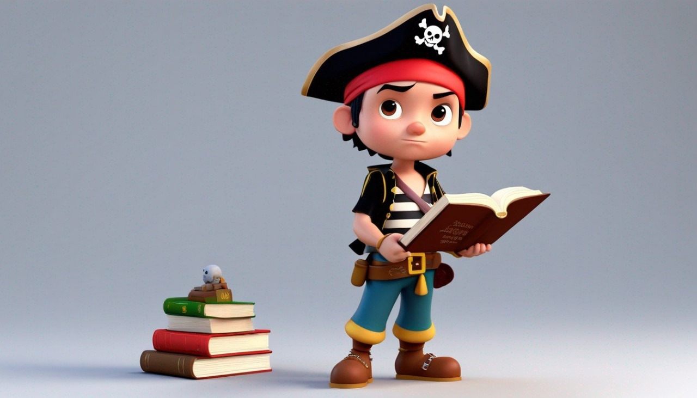
- Nombres
- Ludwig Ledesma Libreros
- Valeria Mazo Rodriguez
- Stephania Muñoz Campo
Introducción a "Little Writer Boys"
Bienvenidos a "Little Writer Boys", un inspirador proyecto pedagógico que transforma la forma en que los más pequeños aprenden y participan en el aula. En el corazón de nuestra iniciativa está el deseo de cultivar la atención selectiva a través de estrategias envolventes de lectura, narración y creación de cuentos.
Imaginamos un aula donde cada cuento leído se convierte en una paleta para la expresión artística de los niños. Desde dibujos en cuadernos hasta esculturas con plastilina y creaciones con materiales orgánicos, cada niño es alentado a plasmar su interpretación única.
Pero no nos detenemos ahí. "Little Writer Boys" va más allá, inspirando a los pequeños a ser los narradores de sus propias historias. Creemos que el único límite para la creatividad de los niños es su propia imaginación, y queremos fomentar un entorno donde esa imaginación florezca.
Únete a nosotros mientras exploramos las infinitas posibilidades de aprendizaje interactivo y participativo. ¡Prepárate para ser cautivado por el asombroso mundo de "Little Writer Boys" donde cada niño se convierte en un creador de cuentos único!
Recursos Creativos para Maestros en "Little Writer Boys"
En "Little Writer Boys", proporcionamos una caja de herramientas educativas vibrantes y lúdicas para maestros que desean estimular la imaginación y la participación activa de sus estudiantes. Nuestra metodología pedagógica integra la lectura, la expresión artística y la creación de cuentos como catalizadores para un aprendizaje significativo.
Explora con Nosotros:
Lecturas Cautivadoras: Sumerge a tus alumnos en experiencias literarias que estimulan la atención y despiertan la creatividad mediante cuentos especialmente seleccionados.
Arte y Manualidades: Desde dibujos expresivos hasta manualidades con materiales diversos, como ramas, plastilina y porcelanicrón, ofrecemos actividades artísticas que transforman las narrativas en expresiones visuales.
Bosque de Criaturas Fantásticas: La actividad estrella, donde los niños, inspirados por criaturas mágicas, crean su propio "Bosque de Criaturas Fantásticas", fomentando la diversidad y la construcción de mundos imaginarios.
Videos Inspiradores: Aprovechamos la potencia de videos educativos para expandir los horizontes de los niños, especialmente en la creación de su mundo de fantasía.
Guías Sencillas y Divertidas:
Incorporamos guías fáciles y divertidas de coloreo, escritura y comprensión lectora. Estas guías no solo son herramientas, sino también compañeras interactivas que transforman el aprendizaje en una experiencia atractiva.
Cómo Integrar en tu Aula:
Nuestros recursos no solo enriquecen, sino que también son guías flexibles para la planificación del docente. Creemos que la lúdica y la creatividad son fundamentales para construir las bases éticas de los ciudadanos del futuro. Descubre cómo estas estrategias, incluyendo guías sencillas pero divertidas, se adaptan perfectamente a tu planificación para trabajar valores humanos dentro del aula.
¡Únete a nosotros en "Little Writer Boys" y transforma tu aula en un espacio donde la imaginación y el aprendizaje se entrelazan de manera única!
Mundo Miniatura
El jardín de las mariposas
En un hermoso jardín, vivían mariposas de diferentes colores y tamaños. Al
principio, solo se asociaban con mariposas de su mismo color. Un día, una
mariposa azul decidió invitar a mariposas de otros colores a unirse a su baile.
Al principio, hubo dudas y miradas extrañas, pero pronto todos se dieron
cuenta de que la diversidad hacía el jardín más hermoso. Aprendieron que la
tolerancia y la aceptación de las diferencias enriquecen nuestras vidas.
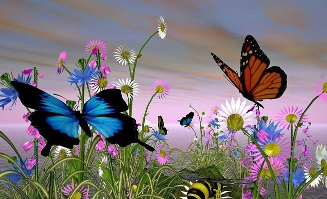
El Perro y su reflejo en el rio
Un día un perro que caminaba muy hambriento por el bosque se encontró un
apetitoso hueso, mientras no salía de su asombro para aquella suerte tomó el
hueso con el hocico y decidió volver a su hogar.
En el camino pasó por el puente de un río y al bajar su mirada, observó su
propio reflejo en el agua. Creyendo que aquel reflejo era en realidad otro perro
que llevaba otro hueso mucho más grande que el suyo, se propuso adueñarse
del hueso ajeno.
El perro ya muy decidido, soltó su hueso y saltó al agua para quitar a su reflejo
su deliciosa pertenencia, sin embargo, el resultado fue muy malo, ya que no
había ni hueso grande ni otro perro.
Así, el perrito se quedó sin su hueso y sin el de su reflejo.
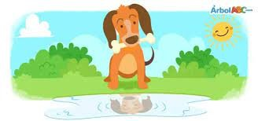
EL LEÓN Y EL PÁJARO AMIGO
Había una vez, en la sabana africana, un león llamado Leo que era conocido
por su valentía y fuerza. Un día, mientras caminaba por la pradera, escuchó un
débil piar proveniente de un pequeño pájaro llamado Pablo.
Pablo estaba atrapado entre las ramas de un árbol y no podía volar. Leo se
acercó con curiosidad y le preguntó a Pablo qué le sucedía. El pájaro explicó
que había perdido su camino y se había enredado en las ramas.
En lugar de burlarse o ignorar al pequeño pájaro, Leo decidió ayudar. Con su
fuerte zarpa, el león movió cuidadosamente las ramas y liberó a Pablo. El
pájaro, agradecido, cantó una melodía alegre para expresar su gratitud.
A partir de ese día, Leo y Pablo se volvieron amigos inseparables. Aunque eran
diferentes en tamaño y habilidades, se respetaban mutuamente. Leo aprendió
a apreciar la alegría y la libertad que el pequeño pájaro aportaba a su vida,
mientras que Pablo admiraba la fortaleza y el coraje del león.
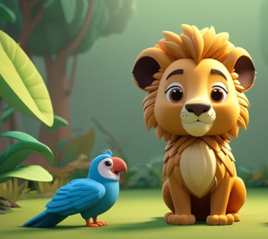
La hormiguita valiente
En un pequeño hormiguero vivía una hormiguita llamada Anita. Era una
hormiguita muy valiente y siempre estaba dispuesta a ayudar a sus amigas. Un
día, una gran tormenta azotó el bosque y destruyó la entrada del hormiguero,
dejándolas atrapadas.
Las demás hormigas estaban preocupadas y no sabían qué hacer. Pero Anita,
con su espíritu solidario, se puso al frente y dijo: "No se preocupen, amigas,
encontraremos una solución juntas".
Anita organizó a todas las hormigas y les asignó tareas. Algunas empezaron a
buscar ramitas y hojas para reconstruir la entrada, otras llevaron comida para
que todas tuvieran energía, y unas más consolaron a las hormigas más
asustadas.
Aunque era una tarea difícil, las hormigas trabajaron unidas con gran
determinación. Anita demostró ser una líder solidaria, alentando a todas a
seguir adelante incluso cuando la tarea parecía abrumadora.
Después de un esfuerzo conjunto, lograron reconstruir la entrada del
hormiguero. Las hormigas se abrazaron emocionadas y agradecieron a Anita
por su valentía y solidaridad. Desde ese día, el hormiguero se volvió un lugar
donde todas las hormigas se ayudaban mutuamente, recordando la
importancia de estar unidas en los momentos difíciles.
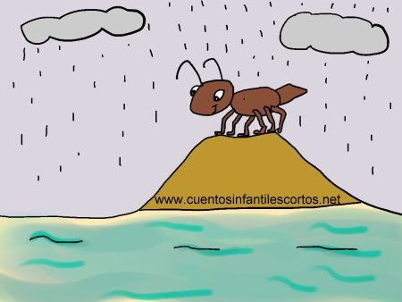
El bosque de las criaturas respetuosas
Había una vez un mágico bosque donde vivían criaturas increíbles. En este
bosque, cada criatura era única y especial, con habilidades y características
diferentes. Había hadas, duendes, unicornios y animales mágicos de todos los
colores y formas.
Un día, una pequeña hada llamada Iris decidió organizar una gran fiesta en el
centro del bosque. Quería que todos se divirtieran y se conocieran mejor. Invitó
a duendes, unicornios, pájaros cantores y hasta a los tímidos dragones que
vivían en la cueva.
Todos estaban emocionados, pero cuando comenzó la fiesta, algo extraño
sucedió. Algunas criaturas empezaron a reírse de las diferencias de las
demás. Los duendes se burlaban de los pájaros por no tener magia, y los
unicornios menospreciaban a los dragones por ser diferentes.
Iris, la pequeña hada, se puso triste al ver que su fiesta se estaba arruinando.
Se acercó al centro del claro y habló con voz suave pero firme.
"En este bosque, somos todos diferentes, pero eso es lo que nos hace
especiales. En lugar de burlarnos de nuestras diferencias, deberíamos
celebrarlas. La magia de la diversidad nos hace más fuertes y felices."
Las palabras de Iris hicieron que las criaturas reflexionaran. Se dieron cuenta
de que estaban lastimando a sus amigos con sus burlas. Entonces, decidieron
cambiar su actitud y empezaron a conocerse mejor.
Los duendes descubrieron que los pájaros podían hacer melodías hermosas
con sus cantos, y los unicornios aprendieron que los dragones eran valientes y
leales. Todos comenzaron a apreciar las cualidades únicas de cada criatura.
A medida que la música y la risa llenaban el bosque, las criaturas se dieron
cuenta de que el respeto y la aceptación hacían que su hogar fuera aún más
mágico. Desde ese día, el Bosque de las Criaturas Respetuosas se convirtió en
un lugar donde todos vivían en armonía, celebrando sus diferencias y
construyendo amistades que durarían para siempre. Y así, la magia del respeto
transformó un simple bosque en un lugar verdaderamente extraordinario.

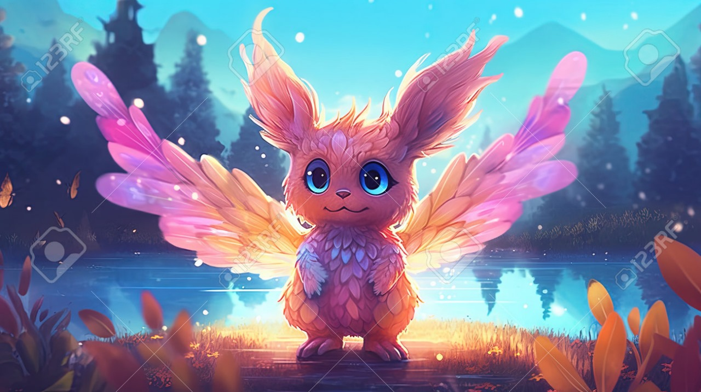
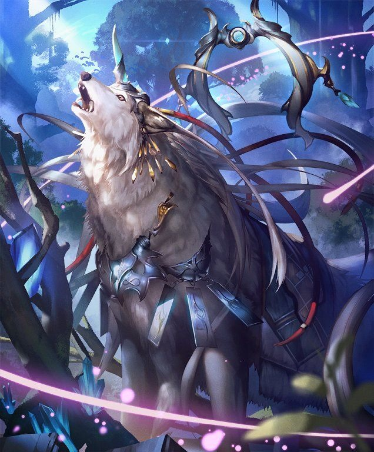
Las aventuras del elefante y el mono
En un frondoso bosque tropical, vivían un elefante sabio llamado Eli y un mono
travieso llamado Milo. A pesar de ser de especies diferentes, eran los mejores
amigos y compartían muchas aventuras juntos. Un día, mientras exploraban el
bosque, se encontraron con una antigua estatua mágica que tenía el poder de
conceder un deseo a quien la encontrara.
Milo, siendo curioso y ansioso por obtener algo maravilloso, decidió hacer un
deseo egoísta. Deseó tener la fuerza del elefante para ser el animal más fuerte
del bosque. Pero el deseo tuvo un efecto inesperado: Milo se convirtió en un
elefante pequeño, pero perdió su agilidad y velocidad de mono.
Eli, al ver lo que había sucedido, decidió hacer su propio deseo. Deseó que Milo
recuperara su forma de mono y aprendiera una valiosa lección sobre la
importancia de aceptarse a uno mismo tal como es.
La estatua mágica concedió el deseo de Eli, y Milo volvió a ser un mono. Se dio
cuenta de que, aunque no era el animal más fuerte del bosque, tenía
habilidades únicas y especiales que lo hacían valioso. A partir de ese día, Milo
apreció su agilidad y astucia, mientras que Eli valoraba su fuerza y sabiduría.
Juntos, aprendieron a complementarse y a ayudarse mutuamente en sus
debilidades. Se volvieron más fuertes como amigos, aprovechando sus
diferencias para superar cualquier desafío que enfrentaran en el bosque
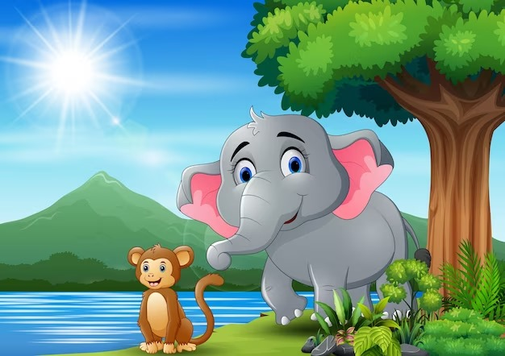
El raton humilde y el elefante sabio
Había una vez, en la selva, un ratón pequeñito llamado Remy y un elefante
sabio llamado Eli. A pesar de ser tan diferentes en tamaño, Remy y Eli eran
grandes amigos.
Un día, mientras caminaban juntos por la selva, se encontraron con una
enorme roca bloqueando el camino. Remy, siendo muy humilde, dijo: "No te
preocupes, Eli, puedo moverla". Con esfuerzo, el pequeño ratón comenzó a
roer la roca.
Eli, el elefante, sonrió y le dijo: "Déjame ayudarte, Remy". Con un suave
empujón de su trompa, la roca se movió fácilmente. Aunque Eli era mucho más
fuerte, nunca menospreció los esfuerzos de su pequeño amigo.
Remy, agradecido, le dijo a Eli: "Eres realmente fuerte, ¡gracias por ayudarme!".
Eli respondió con humildad: "Tu esfuerzo y valentía también son dignos de
admiración, Remy".
Desde ese día, Remy y Eli continuaron siendo amigos inseparables. Remy
aprendió que ser pequeño no significaba ser menos valioso, y Eli recordó la
importancia de la humildad y el respeto hacia los demás, independientemente
de su tamaño.
Esta fábula destaca la importancia de la humildad y la valoración de las
cualidades únicas de cada individuo. Las preguntas están diseñadas para que
los niños reflexionen sobre estos valores de manera sencilla y entretenida
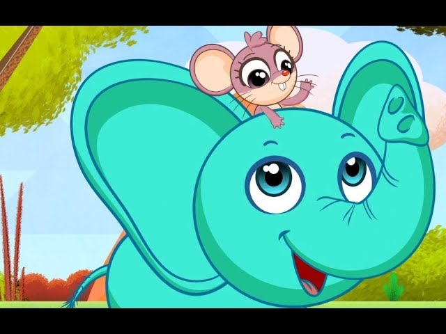
El raton que se comio la luna de queso
En un pequeño pueblo rodeado de campos verdes y altas montañas, vivía un
ratón llamado Roque. Roque era diferente a los demás ratones; siempre
soñaba con cosas extraordinarias y se preguntaba por el mundo más allá de
su madriguera. Una noche, mientras observaba el cielo estrellado, Roque tuvo
una idea audaz: ¿y si la luna en realidad estaba hecha de queso?
Movido por su curiosidad, Roque decidió embarcarse en una aventura para
descubrir la verdad. Viajó por praderas y cruzó ríos, determinado a encontrar
la luna y probar si era realmente de queso. Finalmente, después de muchas
noches de viaje, llegó a una colina alta y vio la luna brillando en el cielo. Sin
pensarlo dos veces, subió por un rayo de luz lunar y llegó hasta la luna. Para
su sorpresa, ¡era de queso!
Roque no pudo resistirse y comenzó a comer la luna, disfrutando cada pedazo
con deleite. Pero a medida que comía, la noche en el pueblo se volvía más
oscura. Las estrellas perdían su brillo y los habitantes del pueblo se
preocupaban por la desaparición de la luna.
Roque, al darse cuenta de las consecuencias de sus acciones, decidió
encontrar una solución. Con la ayuda de los demás ratones del pueblo,
recolectaron pedazos de queso de las casas de los aldeanos y los lanzaron al
cielo. Poco a poco, los trozos de queso se unieron y formaron una nueva luna
en el cielo.
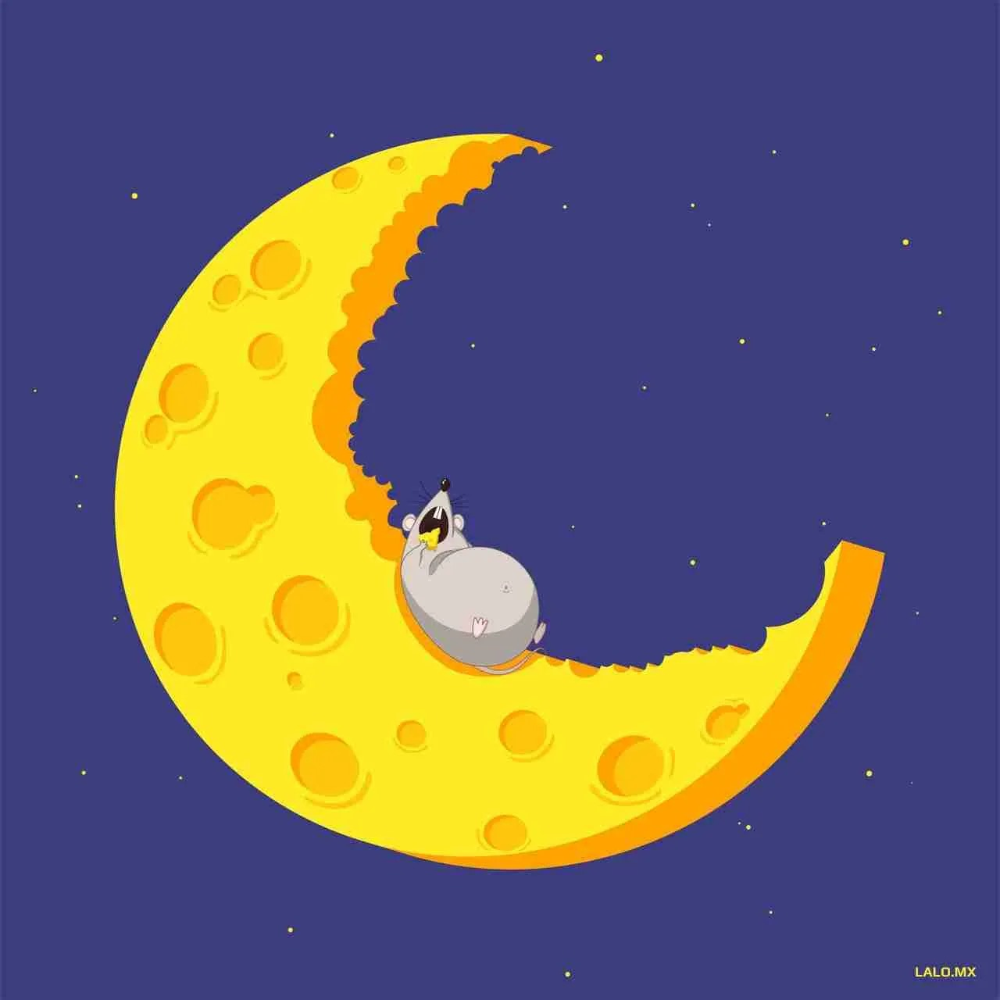
El zapatero y los duendes
Érase una vez un zapatero muy pobre que vivía con su esposa. Aunque él
trabajaba con mucha diligencia y sus zapatos eran de excelente calidad, no
ganaba lo necesario para mantener a su familia. Terminó siendo tan pobre que
solo le quedaba el dinero para comprar el cuero con que hacer el último par
de zapatos.
Con mucho cuidado cortó el cuero y colocó las piezas en su mesa de trabajo
para coserlas a la mañana siguiente.
Al llegar la mañana, en lugar del cuero que había dejado, el zapatero se
sorprendió al encontrar un hermoso par de zapatos. Eran tan bellos los
zapatos, que un hombre pasó por la tienda y los compró por el doble del
precio. El zapatero fue a contárselo a su esposa:
— Con este dinero, compraré el cuero para hacer dos pares de zapatos —dijo
entusiasmado.
Esa noche cortó el cuero y nuevamente colocó las piezas en su mesa de
trabajo para coserlas en la mañana.
A la mañana siguiente, encontró dos pares de zapatos relucientes y perfectos.
Estos zapatos se vendieron por un precio aún más alto.
Todas las noches, el zapatero dejaba el cuero cortado en su mesa de trabajo y
todas las mañanas encontraba más pares de zapatos. Muy pronto, la pequeña
tienda se hizo famosa y el zapatero se convirtió en un hombre muy rico.
El zapatero y su esposa se sentaron junto al fuego una noche:
— ¿Qué te parece si nos escondemos para conocer a quien nos ha estado
ayudando? —dijo el zapatero.
El zapatero y su esposa se escondieron. Alrededor de la medianoche, vieron a
dos pequeños duendes entrar furtivamente en la tienda de zapatos. Rápidos y
habilidosos, los duendecillos hicieron un par de zapatos en un instante. Era
invierno y los hombrecillos vestidos con ropas harapientas, temblaban
mientras trabajaban.
—Pobres duendecillos, deben sentir mucho frío —susurró la esposa a su
marido—. Les haré dos abrigos de lana, así estarán más calientitos.
A la medianoche siguiente, al lado del cuero, los dos duendecillos encontraron
dos elegantes abrigos rojos con botones dorados y se los pusieron
inmediatamente. Fue tanta la alegría que bailaron y cantaron:
—¡Qué hermosos abrigos! Nunca volveremos a tener frío.
Pero cuando uno de los pequeños duendecillos le dijo al otro:
—Sigamos trabajando.
El otro respondió:
—¿Trabajo? ¿Para qué? Con dos abrigos como estos ya somos ricos. Nunca
más tendremos que trabajar.
Los dos duendecillos se fueron por donde habían llegado y nunca más se les
volvió a ver.
La tienda continuó prosperando, pero el zapatero y su esposa siempre
recordaron a los buenos duendecillos que los habían ayudado durante los
tiempos difíciles.
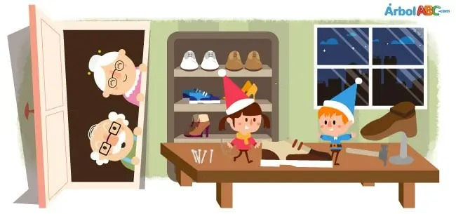
Uga la tortuga
- ¡Caramba, todo me sale mal!, se lamenta constantemente Uga, la tortuga.
Y es que no es para menos: siempre llega tarde, es la última en acabar sus
tareas, casi nunca consigue premios a la rapidez y, para colmo es una
dormilona.
- ¡Esto tiene que cambiar!,- se propuso un buen día, harta de que sus
compañeros del bosque le recriminaran por su poco esfuerzo al realizar sus
tareas.
Y es que había optado por no intentar siquiera realizar actividades tan
sencillas como amontonar hojitas secas caídas de los árboles en otoño, o
quitar piedrecitas de camino hacia la charca donde chapoteaban los calurosos
días de verano.
- ¿Para qué preocuparme en hacer un trabajo que luego acaban haciendo mis
compañeros? Mejor es dedicarme a jugar y a descansar.
- No es una gran idea - dijo una hormiguita - Lo que verdaderamente cuenta
no es hacer el trabajo en un tiempo récord; lo importante es acabarlo
realizándolo lo mejor que sabes, pues siempre te quedará la recompensa de
haberlo conseguido.
No todos los trabajos necesitan de obreros rápidos. Hay labores que requieren
tiempo y esfuerzo. Si no lo intentas nunca sabrás lo que eres capaz de hacer, y
siempre te quedarás con la duda de si lo hubieras logrado alguna vez.
Por ello, es mejor intentarlo y no conseguirlo que no probar y vivir con la duda.
La constancia y la perseverancia son buenas aliadas para conseguir lo que nos
proponemos; por ello yo te aconsejo que lo intentes. Hasta te puede
sorprender de lo que eres capaz.
- ¡Caramba, hormiguita, me has tocado las fibras! Esto es lo que yo necesitaba:
alguien que me ayudara a comprender el valor del esfuerzo; te prometo que lo
intentaré.
Pasaron unos días y Uga la tortuga se esforzaba en sus quehaceres.
Se sentía feliz consigo misma pues cada día conseguía lo poquito que se
proponía porque era consciente de que había hecho todo lo posible por
lograrlo.
- He encontrado mi felicidad: lo que importa no es marcarse grandes e
imposibles metas, sino acabar todas las pequeñas tareas que contribuyen a
lograr grandes fines
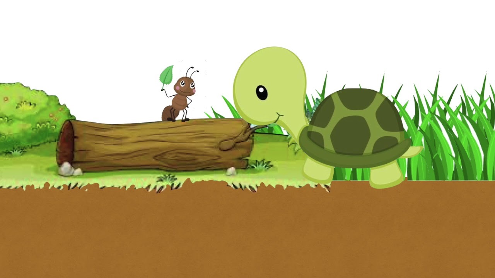